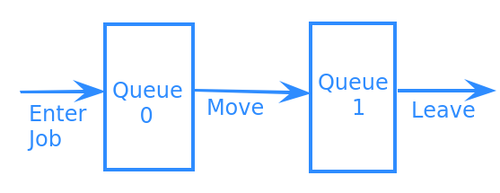

Project 3
Due: May 5 by 11:59p
No late submissions
Important Reminder: As per the course Academic Honesty Statement, cheating of any kind will minimally result in your letter grade for the entire course being reduced by one level.
This document first provides the aims of this project. It then lists the requirements as explicitly as possible. This is followed by a log which should help you understand the requirements. Finally, it provides some hints as to how those requirements can be met.
Aims
The aims of this project are as follows:
Work on a program given largely a blank slate.
To use priority queues to build a multi-queue system.
To give you more experience with C++ programming.
Requirements
You must push a submit/prj3-sol directory to your master branch in your github repository. Typing make within that directory should build a multi-queues executable with usage:
./multi-queues FILE_PATH
The program should read commands from the file specified by FILE_PATH. The commands should enter jobs into the priority queue system shown in the following figure:
Each job is characterized by an:
- id
A
std::stringwhich uniquely identifies that job.- priority0
An
intwhich specifies the priority of the job in Queue 0. Higher numbers have priority. If two jobs have the same value for priority0, then the job which has the lexicographically greater id has priority.- priority1
An
intwhich specifies the priority of the job in Queue 1. Lower numbers have priority. If two jobs have the same value for priority1, then the job which has the lexicographically smaller id has priority.
The commands read from FILE_PATH are:
- enter id priority0 priority1
Enter job specified by id, priority0 and priority1 into Queue 0.
- move
Move the highest priority job from Queue 0 to Queue 1. This command has no effect if Queue 0 is empty.
- leave
Move the "highest" priority job in Queue 1 out of the system. Has no effect if Queue 1 is empty.
After execution of each command, the system should print a line on standard output:
command id priority0 priority1
where command is the command being executed and id priority0 and priority1 are the attributes of the job being advanced through the system.
Your implementation must meet the following additional non-functional requirements:
The enqueue and dequeue operations for each queue must run in time proportional to \(\lg(n)\), where \(n\) is the number of jobs in the queue.
There should be no hardcoded limit on the size of your priority queues; i.e. they should grow dynamically.
Your implementation may not use any library implementation of heaps. Your submission must contain source code which implements a which implements a heap.
Sample Log
An edited sample log of the operation of the program is shown below (note that there are 4 enter commands and 5 leave commands; the extra leave command is simply ignored):
$ cat t.cmd enter id0 2 5 enter id1 3 6 enter id2 4 7 move leave enter id3 5 8 move move leave move leave leave leave $ ./multi-queues t.cmd #head of queue shown on right; start out with q0: [ ]; q1: [ ] enter id0 2 5 #q0: [ id0/2/5 ]; q1: [ ] enter id1 3 6 #q0: [ id0/2/5 id1/3/6 ]; q1: [ ] enter id2 4 7 #q0 [ id0/2/5 id1/3/6 id2/4/7 ]; q1: [ ] move id2 4 7 #q0 [ id0/2/5 id1/3/6 ]; q1: [ id2/4/7 ] leave id2 4 7 #q0 [ id0/2/5 id1/3/6 ]; q1: [ ] id2/4/7 enter id3 5 8 #q0 [ id0/2/5 id1/3/6 id3/5/8 ]; q1: [ ] move id3 5 8 #q0 [ id0/2/5 id1/3/6 ]; q1: [ id3/5/8 ] move id1 3 6 #q0 [ id0/2/5 ]; q1: [ id3/5/8 id1/3/6 ] leave id1 3 6 #q0 [ id0/2/5 ]; q1: [ id3/5/8 ] id1/3/6 move id0 2 5 #q0 [ ]; q1: [ id3/5/8 id0/2/5 ] leave id0 2 5 #q0 [ ]; q1: [ id3/5/8 ] id0/2/5 leave id3 5 8 #q0 [ ]; q1: [ ] id3/5/8 $
Provided Files
You are being provided with the following files in the prj3-sol directory. They must be submitted along with your project, whether you modify them or not.
- Job module
job.hh specification file and job.cc implementation file. Provides facilities for reading and writing jobs.
- Command module
command.hh specification file and command.cc implementation file. Provides facilities for reading and writing commands.
- Command-stream module
command-stream.hh specification file and command-stream.cc implementation file. Provides facilities for reading a stream of commands from a file.
- Command Stream Test
The file command-test.cc illustrates the use of the command stream module.
- Test Commands
The t.cmd file used for generating the above log.
Hints
The following steps are not prescriptive in that you may choose to ignore them as long as you meet all project requirements.
This project largely involves assembling code together and hooking up the different pieces to meet the requirements. Unlike previous programs you are not being provided with any main() program and will have to implement the (admittedly trivial) command-line program by yourself.
These hints do not contain the boilerplace of setting your project and project submission. Please adapt the instructions from previous projects to this project.
Play with the code with which you have been provided. Set up a Makefile to build the command-test executable. Verify that it works.
Decide on the source code which you will use for implementing a binary heap. Possibilities include:
The code discussed in class. This will need to be adapted to handle entries which are Job's and to permit any number of entries.
The code from the textbook. This will need to be adapted to permit any number of entries.
Some code you pull off the internet. YMMV.
You will need to parameterize the heap code with a comparison function which can be used to compare Job's. The code from the textbook is already set up with one.
Build a class to encapsulate the multi-queues system. It will contain instances of two heaps parameterized by job comparison functions for each of the two queues and provide methods for each of the commands.
Write code similar to command-test.cc to drive your multi-queues class from the commands in a file.
Use valgrind to verify that your program does not leak memory.
Iterate until you meet all requirements.
Clean up for submission. Ensure that typing make in your submit/prj3-sol directory builds a working nums executable without any errors or warnings.